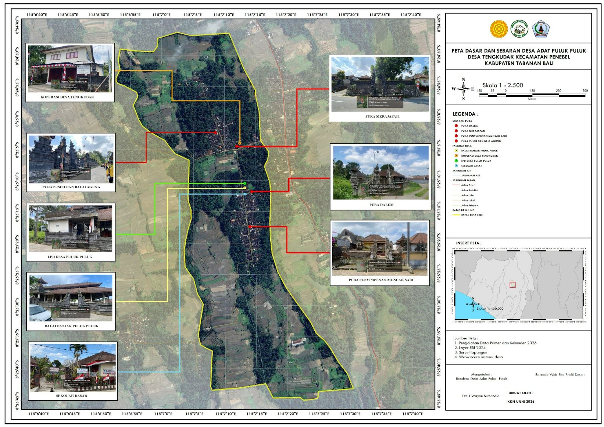
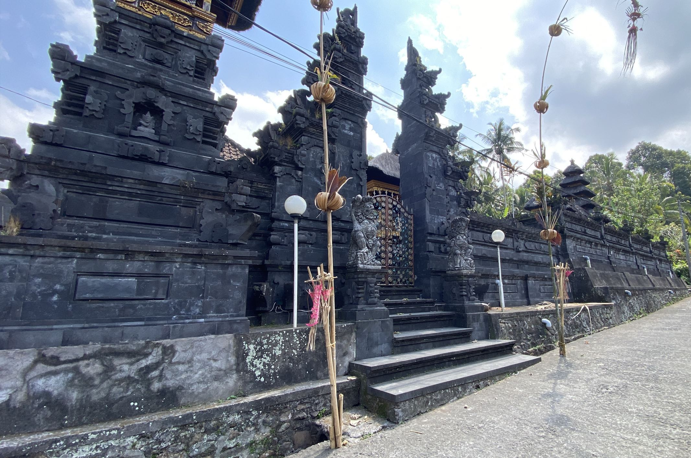
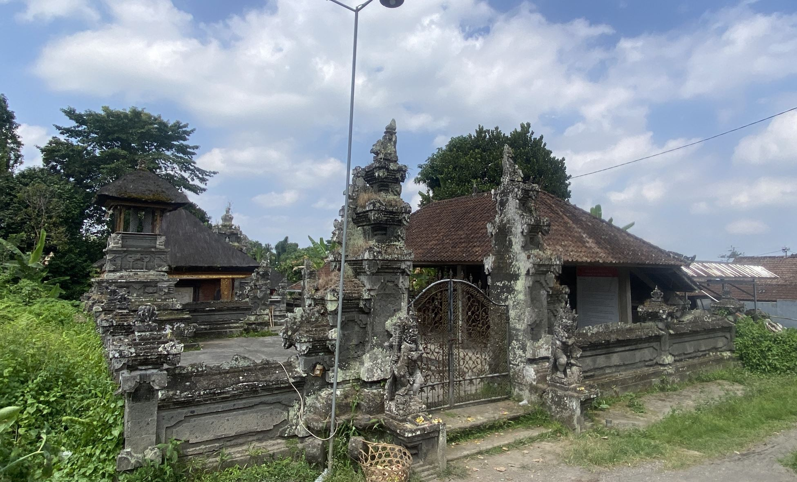
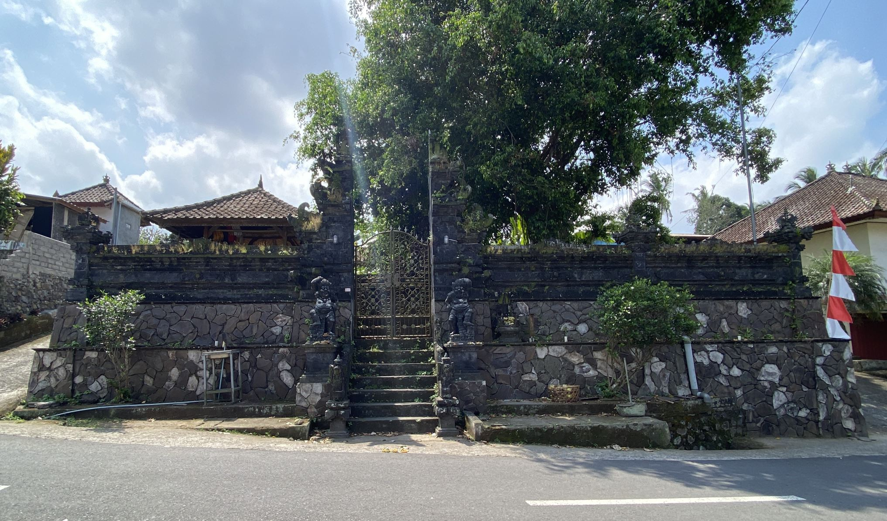
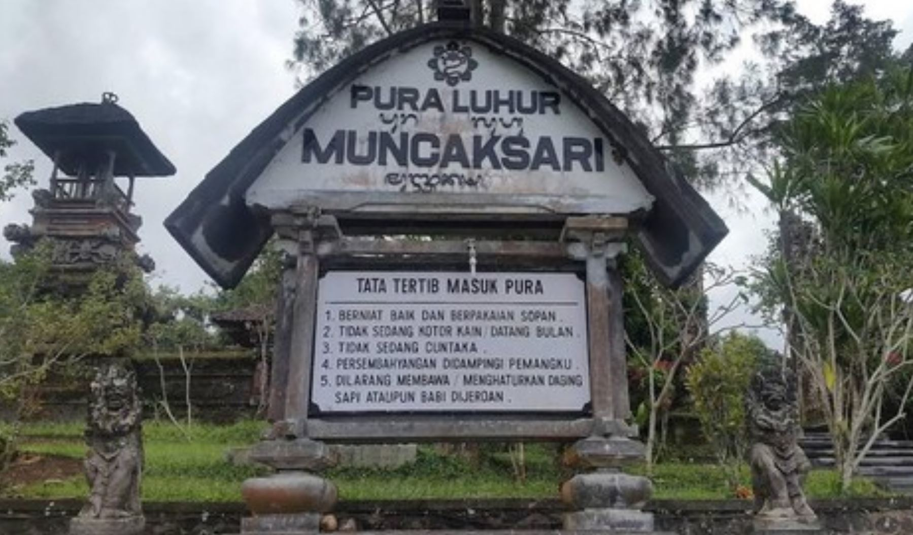
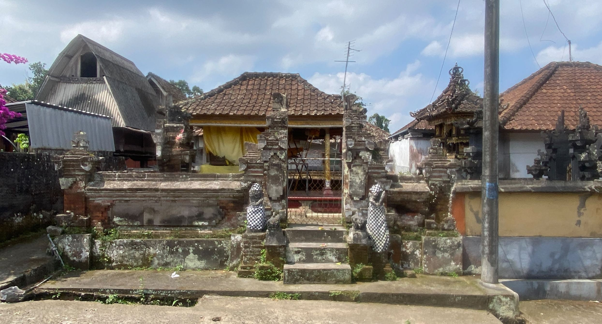
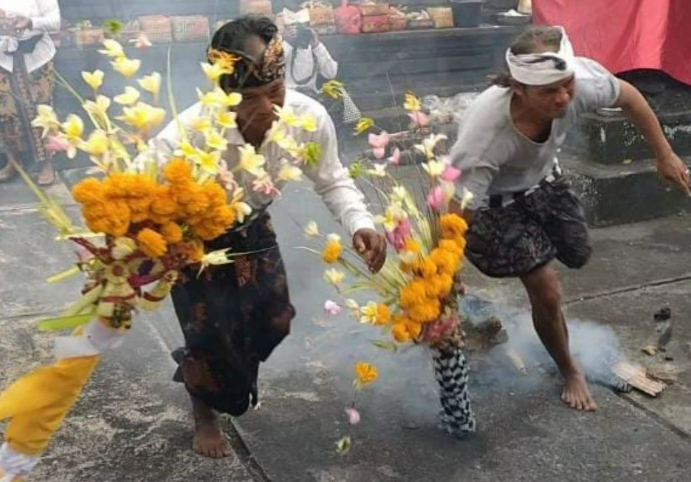
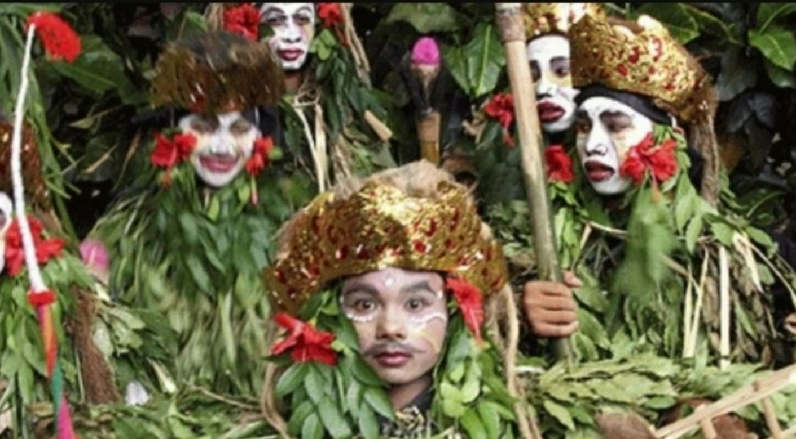
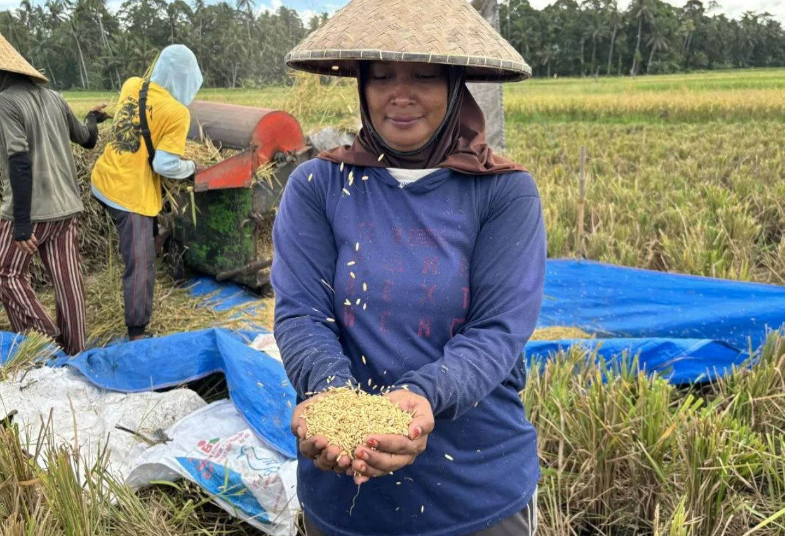
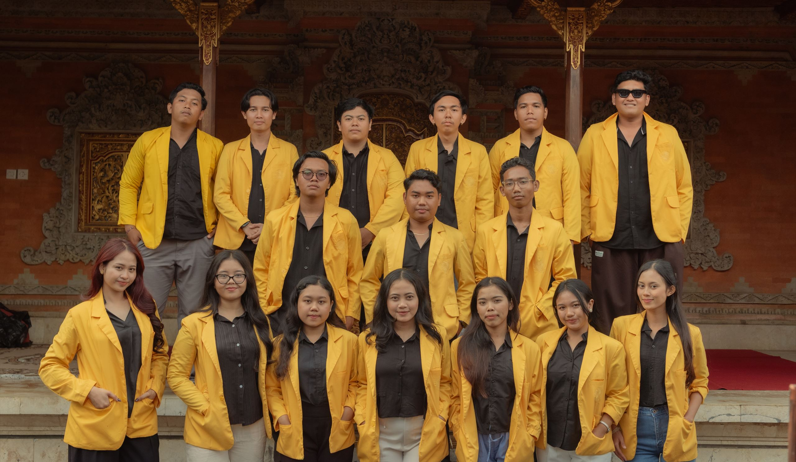

Berawal dari pelarian masyarakat Kerajaan Mengwi, berbagai kawitan memondok dan mepupul di tanah ini hingga membentuk Banjar Adat Puluk-Puluk yang berdiri sejak awal abad ke-20.
Kisah Puluk-Puluk bermula jauh sebelum menjadi desa adat yang berdiri sendiri seperti sekarang.
Sejarah Desa Adat Puluk-Puluk bermula dari masa peperangan, ketika Kerajaan Mengwi kalah melawan Kerajaan Badung. Dari kekalahan itu, sekelompok masyarakat Kerajaan Mengwi melarikan diri menuju kawasan hutan yang kini menjadi wilayah Puluk-Puluk, Wongaya Gede, dan Tengkudak.
Jejak pelarian ini masih dapat dibaca hari ini lewat keberagaman keturunan (kawitan) krama yang tinggal di Puluk-Puluk. Masyarakatnya tidak berasal dari satu klan saja, melainkan gabungan dari beberapa kawitan berikut:
Nama ini berasal dari kata Pumpul-Pumpul (berkumpul / pupul / mepupul), yang bermakna menyatunya berbagai kelompok masyarakat dari peristiwa pelarian. Mereka memondok, berkelompok, hingga akhirnya membentuk satu banjar dan desa yang utuh.
"Dahulu, sekitar tahun 1700-an, desa ini bernama Pupulan Sari — berada di sebelah barat Desa Dangke (Tengkudak)."
Pemimpin di Desa Adat Puluk-Puluk dipilih secara otodidak, berdasarkan kepercayaan masyarakat dan rekam jejak pengabdian — bukan lewat pemilihan formal.
Menjabat Bendesa Adat selama 20 tahun, didampingi Drs. I Wayan Sumandia sebagai Sekretaris Adat.
Menjabat sebagai Bendesa Adat sejak 9 tahun terakhir.
Setiap kader pemimpin adat wajib memahami secara mendalam rangkaian upacara dan tata cara piodalan melalui buku panduan — purana adat — agar mampu menuntun masyarakatnya dengan baik.
Banjar/Desa Adat Puluk-Puluk berada di bawah naungan Desa Dinas Tengkudak, yang terdiri dari lima desa adat.
Secara internal, wilayah Puluk-Puluk terbagi menjadi tiga tempekan atau regu yang menopang seluruh kegiatan gotong royong dan keagamaan desa.
Tempek 1Wilayah Puluk-Puluk Kaja.
Tempek 2Bagian dari wilayah Puluk-Puluk Kelod.
Tempek 3Bagian lain dari wilayah Puluk-Puluk Kelod.
Berbatasan dengan Subak Muluk.
Sungai/Tukad Kelang-Kelung, berbatasan dengan Tengkudak.
Berbatasan dengan Desa Adat Penatahan.
Tukad Yeh Klungah, berbatasan dengan Desa Adat Puakan.
Lembaga Perksekretariatan Desa Pakraman Puluk-Puluk, Pekraman Puluk-Puluk, Jl. Raya Puluk-Puluk, Tengkudak, Penebel, Kabupaten Tabanan, Bali 82152.

Krama yang aktif menetap di desa dan menjalankan kewajiban ngayah secara penuh.
Krama yang tinggal di luar desa atau wilayah adat, dikenakan iuran wajib yang dibayarkan setiap 6 bulan sekali, ditambah urunan upakara Rp100.000 yang ditarik 3 kali dalam setahun — tiap 6 bulan saat odalan tertentu, dan saat Penyepian.
Jika ada krama atau warga yang meninggal, bantuan tenaga dikumpulkan dari Tempek 1, 2, dan 3 secara bersama-sama, agar penanganan upacara dan upakara dapat diselesaikan lebih cepat.
Masing-masing tempekan mendapatkan giliran jam ngayah (tedun). Jika tugas selesai dalam satu kali giliran, dianggap tuntas. Namun jika belum selesai, tempekan berikutnya akan melanjutkan hingga tugas benar-benar rampung.
Dari Khayangan Tiga hingga pura-pura penyerta lain, setiap pura punya peran dan waktu piodalannya sendiri.

Bagian dari Khayangan Tiga, menaungi kehidupan sosial dan asal-usul desa.
Piodalan: Buda Manis Tambir, setiap 6 bulan
Bagian dari Khayangan Tiga, berkaitan dengan alam kematian dan penyucian.
Piodalan: Sabtu Kliwon (Kuningan)
Terletak di area pertigaan setra, berkaitan langsung dengan prosesi pengabenan atau kremasi.
Terkait prosesi Pitra Yadnya
Salah satu pura penyerta yang dipelihara oleh Desa Adat Puluk-Puluk.
Piodalan: Budha Medangsia
Bale Impen menjadi tempat menyimpan benda sakral (palinggih/tapakan), berdampingan dengan Pura Pesimpangan.
Penyimpanan benda sakral desaDesa Adat Puluk-Puluk memiliki dokumen Awig-Awig tertulis, yang termasuk salah satu yang tertua di kawasan ini.
Awig-awig utama dijabarkan kembali ke dalam Pararem, yang disesuaikan dengan aturan tata kehidupan Desa Adat se-Bali secara umum.
Selain aturan tertulis, terdapat dresta — tradisi lisan turun-temurun — yang tetap dihormati dan dijalankan oleh masyarakat.
Jika ada penyesuaian dresta mengikuti perkembangan zaman, aturan baru dibahas terlebih dahulu melalui musyawarah desa sebelum ditetapkan secara resmi.
Usulan pembaruan dresta dibahas bersama krama.
Hasil pembahasan didokumentasikan secara tertulis.
Aturan baru sah menjadi Pararem resmi desa.
Beberapa kesenian di Puluk-Puluk bersifat sakral dan hanya dipentaskan pada momen-momen tertentu.

Kesenian sakral yang dipentaskan hanya pada waktu-waktu tertentu sesuai ketentuan adat.

Hanya dipentaskan pada saat upacara pengabenan berlangsung.
Pusat pertemuan dan kegiatan krama adat Puluk-Puluk.
Telah menyumbangkan Rp40.000.000 ke desa, sekaligus mengelola air minum dari sumber mata air (klebutan).

Umumnya masyarakat Desa Adat Puluk-Puluk bermata pencaharian sebagai petani di sawah/subak maupun ladang. Selain itu, sebagian masyarakat juga bekerja sebagai buruh.
Terdapat urbanisasi dari kota ke pedesaan. Turis yang berkunjung atau berjalan-jalan ke area pura terkadang menimbulkan keresahan bagi masyarakat setempat, karena warga tidak mengetahui apakah turis tersebut sedang dalam keadaan cuntaka atau tidak.
Bendesa berharap tumbuhnya kepedulian terhadap tradisi di kalangan anak muda, agar warisan budaya dan adat Puluk-Puluk tetap lestari untuk generasi berikutnya.
Penyusunan profil digital Desa Adat Puluk-Puluk ini tidak lepas dari kontribusi mahasiswa Kuliah Kerja Nyata (KKN) Universitas Hindu Indonesia (UNHI) yang mengabdi langsung bersama krama desa selama masa penugasan.
Melalui wawancara bersama tokoh adat, pendataan krama, hingga dokumentasi pura dan tradisi, mahasiswa turut membantu merangkum dan mengabadikan profil desa ini agar lebih mudah diakses oleh masyarakat luas.
